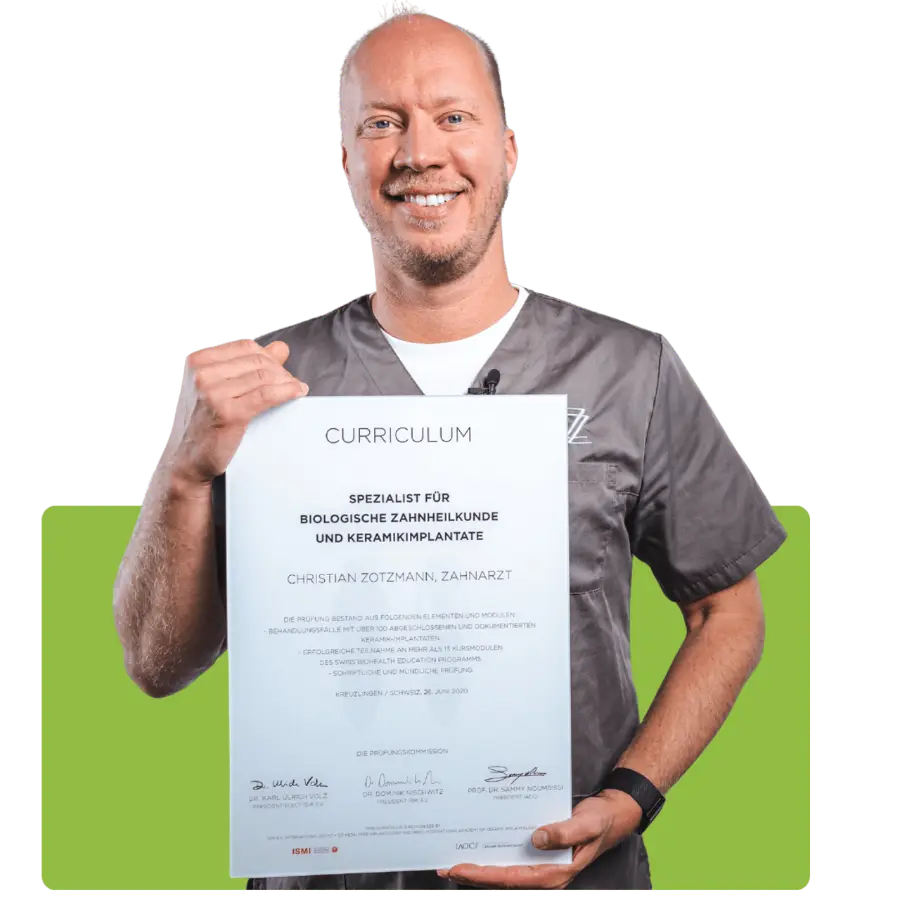
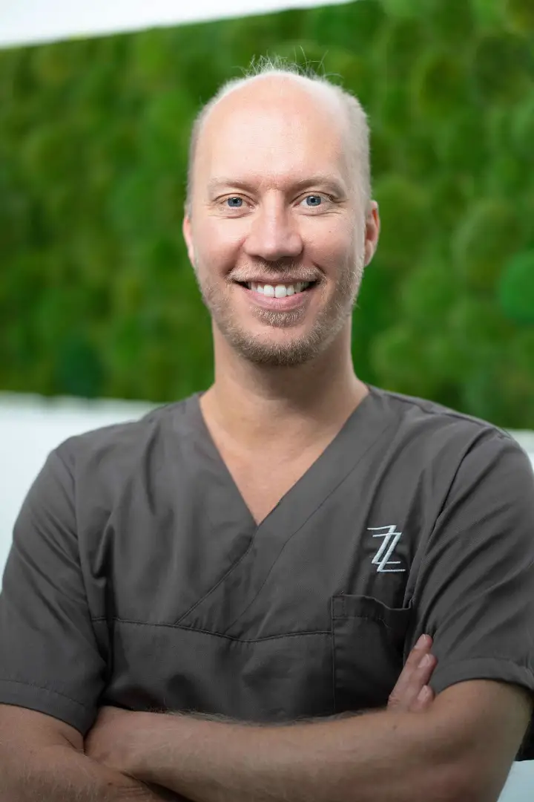
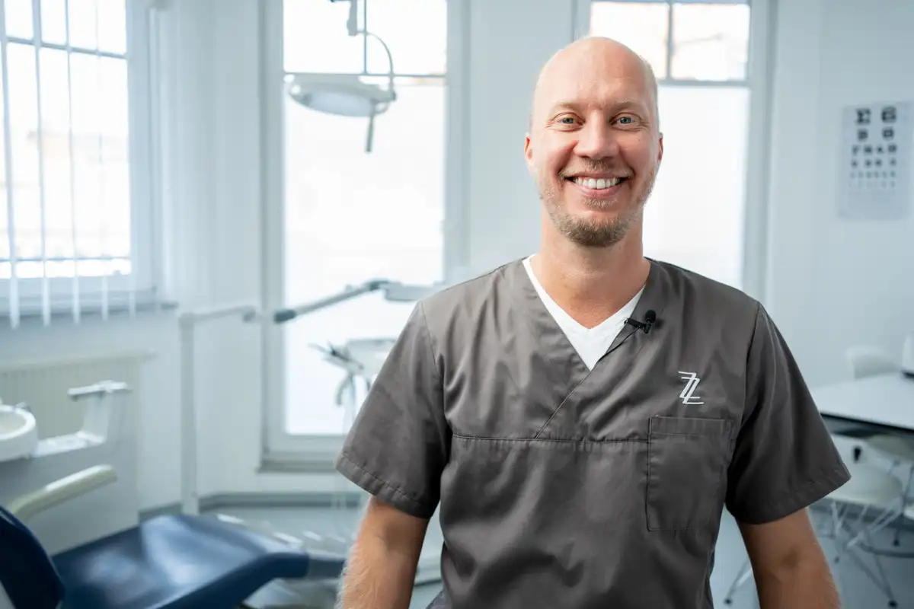
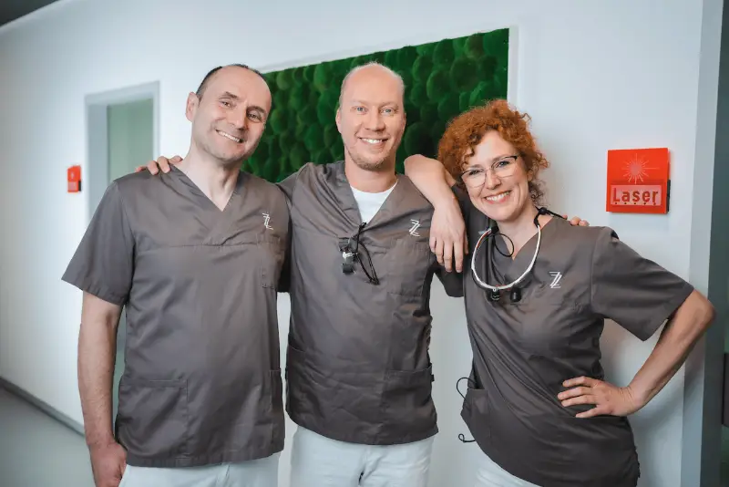
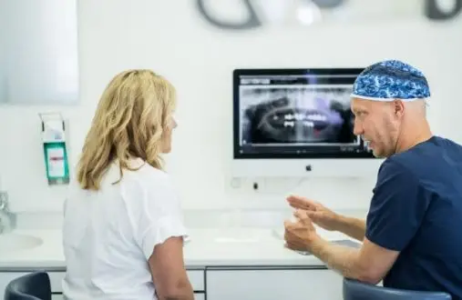
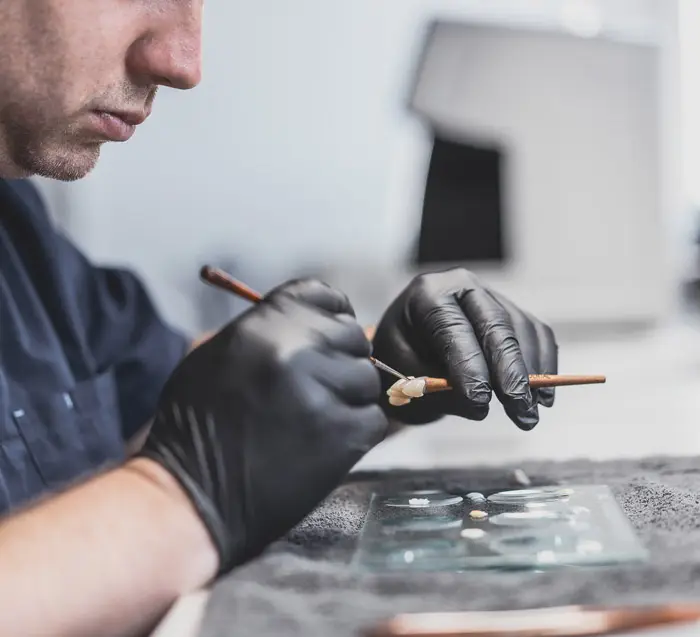
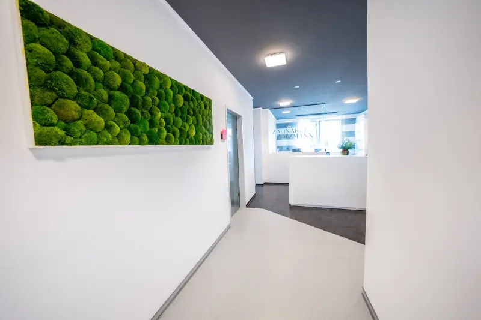

Zahnarzt Christian Zotzmann
Biologischer Zahnarzt aus Balingen
Ich bin Christian Zotzmann und freue mich, dass Sie sich für meine Arbeit interessieren.
Meine Mission ist es, Zahnheilkunde neu zu denken – nicht nur als Behandlung von Beschwerden, sondern als Beitrag zu ganzheitlicher Gesundheit.


Mein Behandlungsansatz
Für mehr als nur schöne Zähne
Viele meiner Patienten kommen zu mir, weil sie …
- mit chronischen Entzündungen, Müdigkeit oder Beschwerden trotz unauffälliger Befunde kämpfen
- altes Amalgam oder Metalle im Mund haben und sich eine sichere, individuelle Lösung wünschen
- einen Zahnersatz suchen, der nicht nur funktioniert – sondern zum Körper passt
Darauf bin ich spezialisiert:
- 100 % metallfreie Keramikimplantate
- 3D-navigierte Implantologie (DVT-Technologie)
- Sanfte Amalgamentfernung mit Schutzmaßnahmen
- Störfelddiagnostik & biologische Ausleitung
- Ozon-, Plasma- und Lasertherapie zur Keimreduktion
Meine Schwerpunkte
Womit ich Ihnen helfen kann
- 01Biologische Zahnmedizinmetallfrei, Störfeldsanierung, Amalgamsanierung
- 02Keramikimplantate / metallfreie Implantologie100 % Zirkonoxid-Keramik, bioverträglich und ästhetisch
- 033D-navigierte ImplantologieDVT-gestützte Planung für präzise, schonende Eingriffe
- 04All-on-4®-Konzept, Knochenaufbau, Sofortversorgungästhetischer Zahnersatz aus dem eigenen Labor
- 05Prophylaxe, moderne Diagnostik, Vorsorge & Beratungdamit Ihre eigenen Zähne so lange wie möglich gesund bleiben


Was mich antreibt
Ich wollte nie „nur Zähne reparieren“.
Ich möchte Menschen helfen, ganzheitlich gesund zu werden – und der Mund ist dafür oft der entscheidende Schlüssel.
Deshalb nehme ich mir ausreichend Zeit für Aufklärung, Entscheidungsfindung und langfristige Lösungen. In meiner Praxis gibt es keine Fließbandmedizin, sondern individuelle Betreuung.
Lernen Sie mich kennen
Ein kurzes Telefonat – und Sie wissen, ob wir zueinander passen.
Warum gerade diese Zahnarztpraxis?
Mehr als eine Zahnarztpraxis.
Zahnarzt Zotzmann in Balingen – moderne Zahnheilkunde trifft ganzheitliche Medizin.
Ihre Experten für Implantologie, Zahnheilkunde und Prophylaxe. Wir verbinden moderne Zahnmedizin mit natürlichen Verfahren – für schöne Zähne und nachhaltige Gesundheit. Unsere Praxis liegt im Herzen von Balingen im Zollernalbkreis und ist gut erreichbar aus Albstadt, Hechingen, Bisingen und Umgebung.
Zahnärzte01
in der Praxis02
pro Jahr03
Erfahrung04



Unsere Spezialgebiete
Die häufigsten Themen unserer Patienten
Noch unsicher?
Wir beraten Sie kompetent und unverbindlich.
In einem kostenlosen 15-Minuten-Telefonat klären wir Ihre Fragen und ob Keramikimplantate für Sie die richtige Lösung sind.
Oder rufen Sie uns direkt an: 07433 5811